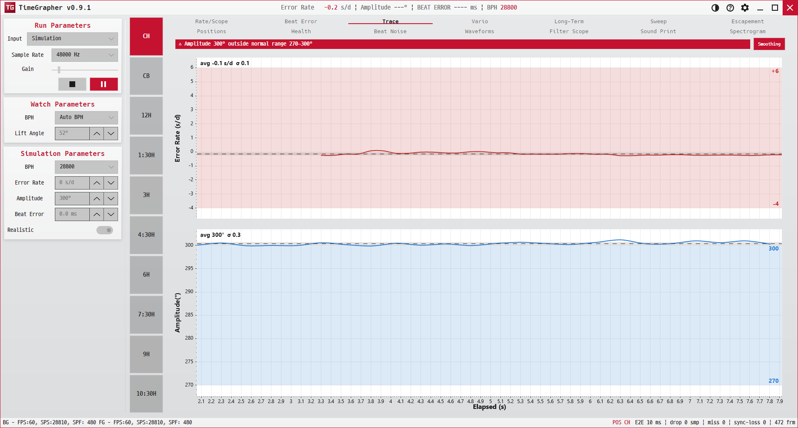

3. Trace
측정이 진행되는 동안 레이트와 진폭이 흔들리지 않고 유지되는지 시간축으로 추적합니다.
Tracks whether rate and amplitude hold steady over the elapsed run — the "is it keeping its settings?" view.
Acompanha se a rate e a Amplitude se mantêm estáveis ao longo da medição — a visualização "ele está mantendo seus ajustes?".

용도 · Purpose · Finalidade
한 자세에서 시계를 일정 시간 두고, 시간이 가도 정확도와 진폭이 일정한지(또는 점점 처지는지) 봅니다.
Leave the watch in one position for a while and see if accuracy and amplitude stay flat (or sag over time).
Deixe o relógio em uma posição por um tempo e veja se a precisão e a Amplitude se mantêm planas (ou caem ao longo do tempo).
무엇이 보이나 · What's shown · O que é exibido
| X축 · X · X | Y축 · Y · Y | 표시 · Shown · Exibido | |
|---|---|---|---|
| Error Rate (위) | Elapsed (s) | Error Rate (s/d) | 초록 선(누적 기록).Green line (cumulative).Linha verde (acumulada). |
| 진폭 (아래) | Elapsed (s) | Amplitude(°) | 선 + 270–300° 건강범위 음영 띠.Line + shaded 270–300° healthy band.Linha + faixa saudável sombreada de 270–300°. |
경고 배너(위) — 레이트가 −1 s/d보다 느리거나 진폭이 270–300°를 벗어나면 ⚠와 함께 "Watch is running late (X s/d)" 또는 "Amplitude X° outside normal range 270–300°"가 표시됩니다.
Alert banner (top) — if rate runs slower than −1 s/d, or amplitude leaves 270–300°, a ⚠ shows "Watch is running late (X s/d)" or "Amplitude X° outside normal range 270–300°".
Banner de alerta (em cima) — se a rate ficar mais lenta que −1 s/d, ou a Amplitude sair de 270–300°, um ⚠ exibe "Watch is running late (X s/d)" ou "Amplitude X° outside normal range 270–300°".
요약 푸터 — "Error Rate avg X s/d / last 60.0s Y s/d | Amplitude avg Z° / last 60.0s W°"(전체 평균과 최근 60초 평균).
Summary footer — "Error Rate avg / last 60.0s … | Amplitude avg / last 60.0s …" (since-start vs. last-60s average).
Rodapé de resumo — "Error Rate avg / last 60.0s … | Amplitude avg / last 60.0s …" (média desde o início vs. média dos últimos 60 s).
읽는 법 · How to read · Como ler
- 좋음: 두 선이 평평하게 유지 — 레이트는 0 근처, 진폭은 음영 띠 안.Good: both lines stay flat — rate near 0, amplitude inside the shaded band.Bom: ambas as linhas permanecem planas — rate perto de 0, Amplitude dentro da faixa sombreada.
- 주의: 진폭이 시간이 갈수록 처지면 윤활/파워리저브 문제 신호일 수 있습니다.Watch out: amplitude drifting down over time can signal lubrication / power-reserve issues.Atenção: a Amplitude derivando para baixo ao longo do tempo pode indicar problemas de lubrificação / reserva de marcha.
- ⚠ 배너가 뜨면 사양을 벗어난 것 — 일시정지 후 원인을 살피세요.A ⚠ banner means out of spec — pause and investigate.Um banner ⚠ significa fora da especificação — pause e investigue.